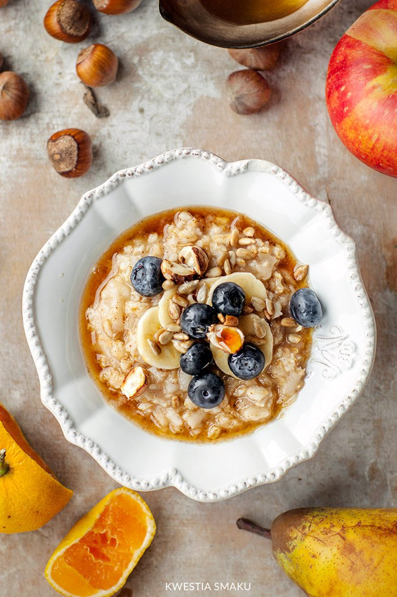

płatki owsiane górskie - 50 g
budyń waniliowy - 40 g
mleko - 400 ml
cukier - 2 łyżki
malina - 80 g
Budyń przesypujemy do miski i dokładnie mieszamy z mlekiem. Płatki owsiane wsypujemy do pojemnika miksującego, zalewamy mieszanką budyniu z mlekiem i dodajemy cukier. Całość gotujemy z użyciem programu gotowanie wg własnych ustawień / czas 7 minut / temp. 100°C / obroty 1. Połowę ugotowanej owsianki przekładamy z termorobota MC Smart do naczynia, w którym chcemy ją podać.
Do owsianki pozostałej w pojemniku miksującym dodajemy maliny i całość mieszamy z użyciem programu gotowanie wg własnych ustawień / czas 1 minuta / temp. 90°C / obroty 1.
Owsiankę z malinami nakładamy na porcję waniliowej owsianki. Podajemy z ulubionymi dodatkami.